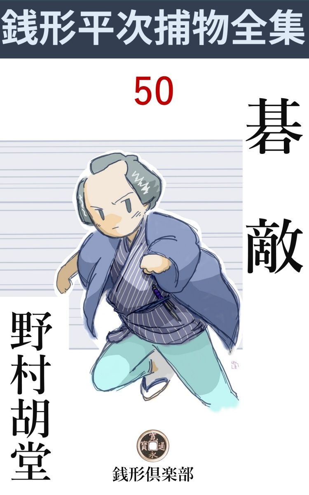
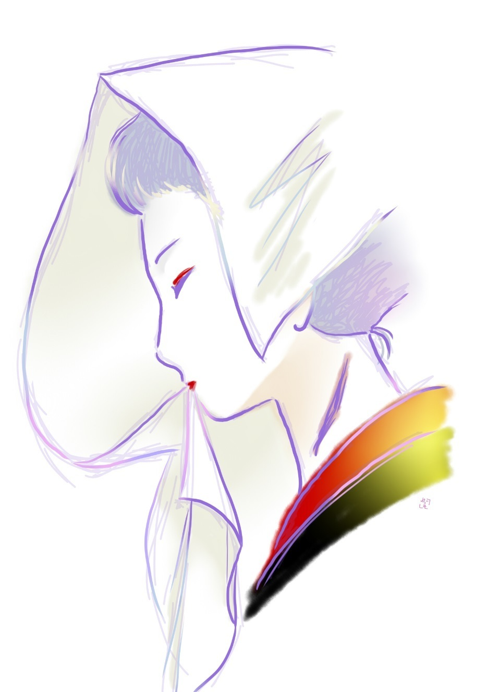

| 碁敵: 銭形平次捕物全集第50話 (銭形倶楽部) | |
| 野村胡堂 | |
| ZENIGATA CLUB (2018) | |

一
「親分、泥棒は物を盗 るのが商売でしょう」
八五郎のガラッ八はまた変な事を言い出しました。
「商売------はおかしいが、まア世間並の泥棒は人の物を盗るだろうな」
銭形平次は、女房に給仕をさせて、遅い朝飯をやりながら、こんな事を言っております。
桜には少し早いが、妙に身内の擽 ぐられるような、言うに言われぬ好い陽気です。
「ところがその世間並でねえ泥棒があったんで------」
「物を盗らずに何を盗ったんだ」
「置いて行ったんで、親分」
「物を置いて行く泥棒はないぜ。八、忘れ物じゃないか」
「戸はコジ開けて入って、他 の家へ物を忘れて行く奴はないでしょう」
「話はこんがら かっていけねえ、いったいどこに何があったんだ。手軽に白状しな、お茶を呑みながら聴いてやる」
「白状と来たね。石を抱かせる代りに、せめて落雁 を抱かせて貰いたい、------出がらしの番茶も呑みようがある」
「あんな野郎だ、お静、狙われた物を出してやった方が宜いよ」
平次が顎 をしゃくると、お静は心得て落雁の箱の蓋を払ってやりました。口数は少いが、柔か味と情愛の籠った、相も変らぬ良い女房振りです。
「親分の前だが、泥棒が金 唐 革 の飛切上等の懐中煙草入れを忘れて行くという法はねえ。おまけに煙管は銀だ。あれは安くちゃ買えませんぜ」
ガラッ八はまだ頭を振っております。落雁はもう四つ目。
「さア、一人で感心していずに、ぶちまけてしまいな、------落雁が気に入ったら、箱ごと持って帰っても構わないから」
「大層気前が宜いんだね、親分」
「馬鹿にするな」
平次と八五郎はこう言った、隔 てのない心持で話し合っております。
「親分も知っていなさるだろう、神田相生町 の、河内屋又兵衛------」
「界隈で一番と言う家持だ、知らなくてどうするものか」
外神田の三分の一も持っているだろうと言われた河内屋又兵衛、万両分 限 の大町人を、平次が知らなくて宜いものでしょうか。
「大旦那の又兵衛------金はあるが伜夫婦に死に別れ、孫の喜太郎という十一になる男の子とたった二人、奉公人と小判に埋まって暮している」
「それがどうした」
「その河内屋へ昨夜泥棒が入ったんで------」
「金は取らずに、その豪勢な懐中煙草入れを置いて行ったと言うんだろう」
「その通り」
「それっきりかえ」
「お気の毒だが、根っ切り葉っ切りそれっきりで」
「呆れた野郎だ。落雁だけ無駄になった。お静、箱を片付けた方が宜いよ」
平次は笑っております。早耳では天才的なガラッ八の八五郎を、毎朝一と廻りさせて、その情報の中から、何か『異常なもの』を嗅ぎ出そうとするのが、長い間の平次の習慣でもあったのです。
「河内屋には金が唸るほどあるでしょう」
「それはあるだろう」
「その金には眼もくれず、------坊っちゃんの喜太郎の寝部屋へ忍び込んで、金唐革の贅 を尽した懐中煙草入れを、手習机の上へ置いて行ったというのは変じゃありませんか」
「昼のうちに誰か忘れて行ったんじゃあるまいね」
「塀を乗越えて、縁側の雨戸をコジ開けて、人の家の中へ物を忘れに入る野郎はありませんよ」
「フーム、少し変だな」
「これが変でなかった日にゃ、落雁を返上して三遍お辞儀をして帰りたいくらいのもんで------」
「お静、ついでに羊羹 もあるだろう」
「冗談じゃないぜ、親分、そんなに甘い物を食った日にゃ、溜飲を起す」
「溜飲や血の道と縁のある顔じゃねえ」
「羊羹を食いながら、今度は何を白状しりゃ宜いんで------」
「その煙草入れは誰のだ」
「解らねえ」
「それ程の品が、持主の解らないことがあるものか、------煙草が入っていたのか」
「粉煙草が少しばかり」
「おかしいぜ八、当分河内屋から眼を放すな。近いうちに何か起るに違いない」
「それは心得ていますよ」
「それから、こんど河内屋へ行く序 があったら、その煙草入れを借りて来い」
「そう来るだろうと思って、持って来ましたよ。河内屋でも世間へ知らせたくないから、そっと調べてくれという話で」
「それは宜い塩梅だ。八がそれほど気の付く男とは知らなかったよ」
「へッ、その積りで付き合って貰いやしょうか」
「馬鹿」
「こいつは落雁や羊羹じゃ安いや」
八五郎はそう言いながら、懐中煙草入れを取出しました。少し古色を帯びた金唐革、柘榴 を彫った金銀金具、少し逞 ましいが目方の確りした銀煙管まで、いささか野暮ったくはあるが、その頃には申分のない贅沢な品です。
中を開けてみると、粉煙草が少々、薩摩 や国府 でもあることか、これは刻 みの荒い、色の黒い、少し馬 糞 臭い地煙草ではありませんか。
「八、一杯買おう、こいつは面白そうだ」
平次はそう言いながら、恐ろしく念入りに煙草入れを見ております。
二
平次の予言は見事に当りました。それから三日目、ガラッ八の八五郎は、髷節を先に立てて飛んで来たのです。
「大変ッ、親分」
「又大変かい、どこの新造に口説 かれた」
「そんな気楽な話じゃねえ、------河内屋の坊っちゃんが殺 られた」
「何？」
「殺られたに違げえねえ、今朝塀の外に冷たくなっていたんだ」
「行って見よう、八」
平次は事件の重大さを嗅ぎ出した様子で、ガラッ八と一緒に宙を飛びました。
神田相生町まではほんの一と走り、一丁四方もあろうと思われる、河内屋の屋敷の中は、朝っぱらから大変な騒ぎです。
「あ、銭形の親分、ちょうど宜いところへ来て下すった。孫が大変なことに------」
もう六十を越して、一粒種の孫の喜太郎を杖とも柱とも頼んでいた、老主人又兵衛の顔は、『悲しみの塑 像 』を見るように凄惨でした。
刻みの深い頬は捻じきれそうに歪 んで、泣かじと噛んだ唇はワナワナと顫えるのに、少し脹れた老の眼からは、際限もない涙が、後から後からと湧いて来るのです。
「とんだ事でしたな、旦那」
「私には殺されたものとしか思えませんが、馴れた親分の眼で見てやって下さい」
平次は静かに点頭 いて、主人の導くままに奥へと進みました。多勢の雇人達は、恐ろしい不安に縮み上って、障子の蔭から、縁側の隅から、それを見送っております。
「これを見て下さい、親分」
動哭と嗚咽と歔欷 の中へ、平次と八五郎は分けて入りました。町人にしては贅沢過ぎると思うほどの絹夜具の中に横たわっているのは、河内屋の秘蔵孫、喜太郎少年の痛々しい姿です。
男人形のような可愛らしい眼鼻立ちも、老主人の又兵衛には未練だったでしょう。
顔に触って見ると、ヒヤリとする冷たさ。
「傷は一つもありませんが、親分」
老人の言葉をそのまま信用するわけにも行きません。が、どこにも傷らしいもののないことも事実です。
「ゆうべどこかへ出たのでしょうか、後前 の事を詳しく聴かして下さい」
平次は一座を見渡しました。そこには少くとも、十人はおります。
「昼頃から、湯島の叔母のところへ行きました。あんまり遅いから泊って来るだろうと思って、気にもせずにいると------今朝この姿で、塀の外に転がっていましたよ」
諦 め切れない様子で、老主人はそっと冷たい顔にさわりました。
「私も悪かったよ。碁打 友達が来て、一局、二局とツイ夢中になって、甥が帰ったのも知らずにいたが------」
そう言うのは、四十前後の立派な武家です。
「貴方様は？」
「馬 場 要 と申す浪人者じゃ」
「あ、馬場猩々 斎 様で」
「御存じかの、いやはや」
馬場要は場所柄笑いもならず、苦りきりながらも額を叩いております。立派な御家人で、無役ながら鳴らした武士ですが、綽 名 を猩々斎と言われるほどの酒豪で、その酒のために浪人し、又兵衛の娘------喜太郎には叔母に当るお米を嫁 取 って、河内屋の後見をしている人物です。
「どなたも、坊っちゃんが帰ったのを気が付かなかったのでしょうか、馬場様」
「それは家内が知っているだろう」
馬場要が後を振り向くと、そこには三十二三の品の良い女が、慎ましく控えておりました。又兵衛の娘、喜太郎には叔母のお米というのでしょう。
「甥の喜太郎は明神様の境内へ行って遊んでいました。近所の子供達とは顔 馴染 で、何時もの事ですから気にも止めずにいると、相生町から迎いの者が来て連れて行ったということで御座いました」
「迎いの者？」
平次は聞きとがめます。
「迎いをやった筈はありません。それがどうも変で------」
又兵衛は言うのです。喜太郎少年を殺した大きな手違いはここにあったのでしょう。
「八、大急ぎで明神様へ行って、境内にいる子供達に、昨日の夕方の事を聴いて来てくれ。どんな事をして遊んで、何 刻 頃迎いの者が来たか、その風態と人相が大事だ」
「合点」
八五郎は飛出します。
「ところで、どうして、こんな虐 たらしい事をしたのでしょう」
お米は合点のゆかぬ様子で、平次に訊ねました。傷の無い死体は、その頃の人には、全く不思議だったのです。
「頓死ではないかな、平次」
馬場要は少し平次をたしなめる調子でした。
「履 物 はありましたか、死体のあった辺に？」
平次は他の事を言います。
「それも気付いて一応捜しましたが、坊っちゃんの履いて出た草履はありませんでしたよ、親分」
そう言ったのは、二十七八の気のきいた男です。
「お前さんは？」
「花房町の佐吉で------」
「あ、油屋さんの」
平次はようやくこの男を思い出しました。丁子 屋 の養女になった、又兵衛の末の娘、お富の許嫁者 で、河内屋にも出入りしている好い男だったのです。
「------」
佐吉は出過ぎたのを後悔する様子で、少し顔を赧らめました。
「履物がなければ、やはり」
「殺されたのでしょうか」
お富はぞっと身顫いをしました。十九の厄、これは一座をパッと明るくするような娘です。
「気の毒だがやはり人手に掛ったのでしょう。出した覚えのない迎いが行っただけでも、唯事ではありません」
「おかしな事があるものだな」
そう言う馬場要の顔を、一座の者はツイ見やります。喜太郎が死ねば、河内屋の大身代は、叔母のお米か、お米の妹で佐久間町の丁子 屋 茂三郎に貰われている、お富に継がせる外はなかったのです。
「いやこれは人手に掛ったに違いありません。一番卑怯な殺し方ですよ」
「------」
「下手人は後から坊っちゃんの顔を半 纏 か襟巻で包んで、後向きに背負ったものでしょう」
「後向きに？」
「背中合せに、顔を包んで背負われると、小さい非力な者ではどうすることも出来ません。坊っちゃんは、下手人の背中で、声も立てず、身動きもならずに死んでしまったことでしょう」
「------」
あまりの恐ろしい想像に、みんなは息を呑んで聞入るばかりです。
「口を開いて、眼が飛出しておりますが、首には縄の痕 も、爪の痕もありません。身体にも何の傷もないところを見ると------」
平次もこの恐ろしい想像の飛躍に、思わず口を緘 みました。
三
「銭形の親分、------二三日前妙な泥棒が入って、煙草入れを置いて行きましたが、それとこれは関 係 はないでしょうか」
主人の又兵衛は先刻から、それを言い出そうとしていたのです。
「あるかも知れません。煙草入れは八五郎に貸して下すったのを、私も見せて貰いましたが------あれはここにいる人がみな知っているでしょうか」
平次は一座の顔を見渡しました。馬場 要 夫妻、丁子屋茂三郎、養い娘のお富、その許嫁者の佐吉、あとは婆やのお沢と番頭の才助と、主人の又兵衛と平次だけです。
「家の者二三人だけは見ましたが、------あとは誰にも申しません。体裁の良いことではないし、それに言う暇もなかったのです」
「もういちど見せて貰いましょうか」
「------」
主人の又兵衛は、立上って次の間から、泥棒の置いて行った金 唐 革 の煙草入れを持って来ました。
「あ、あなた」
驚いたのは馬場要の女房お米です。
「これですが、親分」
「この煙草入れを見知りの方はありませんか。二三日前、河内屋さんへ入った泥棒が置いて行った品ですが」
平次は煙草入れを取って、みんなの前に振りました。
「ちょいと拝見」
「------」
手に取った馬場要、無造作に調べて、
「これは拙者のだが------、泥棒などが持ってくる道理はないて」
こう言ってのけるのです。
「もう少し詳しい事を伺えませんか、馬場様。この煙草入れはどこで、手に入れなすって、------何時人へやったとか、なくなったとか」
「------」
「何も念のためですが------」
「平次」
「へエ------」
「お前は、この馬場要が泥棒だと言うのか」
馬場要の顔はサッと蒼くなりました。平次の意図が判ると、凄まじい激怒が、残っている武士気質を刺戟したのです。
「とんでもない、旦那、私はただ、その煙草入れが、どこをどうしてこの家へ入って来たか知りたかったので御座います」
平次はすっかり恐縮してしまいました。
「それなら言おう、------二度と訊いてはならぬぞ」
「へエ」
「拙者世にある頃、組頭から頂戴した品だ。浪々の身になってからは、贅沢な品と思って、仕舞い込んで置いたが、近頃又取出して一二度粉煙草を入れて用いていたよ、------それが、いつ頃から無くなったか、のうお米」
「一月ほど前でございます」
お米は響 の音に応ずるようでした。
「お聴きの通りじゃ。まだ疑念があるかな、平次」
「よく判りましたが、------どこで紛失なすったので」
「それが判れば返して貰うわい、------馬鹿な」
馬場要は、岡っ引の頭の悪さを軽蔑するように、声もなく笑いました。
「旦那がその頃出入りなすった家は？」
「この家と、町内の碁 会所 位のものだ」
そう言われればそれまでの事です。この上押して物を訊いたら、一本気の猩々斎が腹を立てることでしょう。銭形平次も唯一の手掛りを失って、ハタと困じ入りました。
丁度その時でした。
「親分、判ったぜ」
ガラッ八は鬼の首でも提 げたような勢いで飛んで来ました。
「誰だ、坊っちゃんの迎いに来たのは？」
「馬場さんの家からだそうで」
「何？」
「誰がそんな事を言った」
平次も、馬場要も、容易ならじと声を掛けたのです。
「明神様の境内で遊んでる子供達ですよ。あの顔 触 は毎日同じだ、間違いっこはありませんよ。河内屋の坊っちゃんが、昨日くしゃみ を幾つしたかまで知っていますぜ」
「無駄は止しな」
「夕方迎いに来たのは、顔はろくに見なかったが、白粉の濃い、皺枯れた声で、首に古傷があったそうですよ。その女が、------叔母さんが呼んでいるからすぐ『馬場様へ帰りましょう』------と言ったそうで」
「本当か、それは」
「嘘だと思うなら、証人は六七人明神様の境内に遊んでいますぜ。呼んで来ましょうか」
「------」
ほんのしばらくの間、颱 風 の眼 へ入ったような、恐るべき沈黙が続きました。

「そんな馬鹿な事がある筈はない------子供の言う事などが証拠になるものか。第一白粉の濃い下女などを使った覚えはないぞ」
馬場要はハタとガラッ八を睨み据えます。
「馬場様、------八五郎と子供は後で存分に叱っておきましょう。それはまアそれとして、旦那はゆうべから今朝の夜明けまで、どこに在 なすったか、それを聴かして頂きさえすれば、私には何の疑念も御座いません」
「------」
「坊っちゃんを殺したのは、御武家の仕業では御座いません。それはよく判っておりますが、旦那の昨夜の事を------」
「黙れ、平次」
馬場要は無手 と膝を掴みました。もうひと言いい過ぎたら、平次を抜き討ちにやっつけたかも知れません。
「馬場さん、------御腹立はもっともだが、平次は悪気があって言うのではないようだ。堪能するように話してやったら、どうでしょう」
主人又兵衛はこの争いを見兼ねて口を容れました。相手は武士ですが、舅 に変りはありません。
「旦那様、仏様の甥 の前で、荒い事は御控え下さいまし、------ね親分、ゆうべの事は私から申上げましょう」
お米もツイ見兼ねた様子で夫要を止めながら、一方平次へ妥協的な言葉を掛けるのでした。
「御新造様、有難う御座います。そう仰しゃって下されば、どんなに私が助かるかわかりません」
「昨夜はね、親分、夕方から碁が始まって、とうとう夜明かししてしまいましたよ。月に一度はあることですが------」
お米は日頃の鬱憤を少しばかり漏らしております。
「お相手は？」
「町内の升田屋の隠居と、中屋の若主人、お二人共夜が明けてからお帰りになったのですから、お聴きになれば解ります」
これほど立派な現場不在証明 はあるでしょうか。平次も深々と首をうな垂れて、
「それはどうも------」
と言うよりほかにありません。
「私には覚えがありますが、碁に凝 る方には、徹夜もありがちの事ですね------でもそのために馬場の旦那が潔白と判れば、何が仕合せになるか判りません」
佐吉はそう言うのでした。これも若い癖に碁が好きで有名な男です。
四
河内屋の孫殺しは、それっきり行詰りました。喜太郎が死んで一番儲かるのは、河内屋の大身代を相続する者で、順序から言えば、又兵衛の姉娘、------馬場要の配 偶 になっているお米ですが、これは痩せても枯れても武家の内儀で、既に他家に縁づいた上は、今更夫を捨てて河内屋へ帰ることもならず、そうかと言って、夫の馬場要と一緒に、河内屋へ入り込むことは、父親の又兵衛が承知しそうもありません。
馬場要は名題の大酒飲みの上、磊落 で、豪傑で、おまけに煙草入れや、喜太郎の死について、一脈の疑いを持たれたので、又兵衛がウンと言わないばかりでなく、馬場要自身も、馬場姓を捨てて、町人の家を相続する意志などはない様子だったのです。
すると------、相続人はたった一人、お米の妹で、丁子 屋 に養われている、お富でなければなりません。これならばまだ若くもあり、油屋の佐吉と許婚者の間柄と言っても、まだ祝言したわけではないのですから、河内屋へ戻って戻れないことはなかったのです。
河内屋の大身代は、こうして、お富の方へ転がりそうになって来ました。
「親分、河内屋の下手人は挙りませんか」
ガラッ八がそう言って来たのは、事件があってから十二三日も経ってからの事でした。
「今度ばかりは見当も付かねえ」
「驚いたなア、------あっしにはたった一人心当りがあるんだが」
ガラッ八は少しもじもじしております。
「誰が怪しいんだ、言ってみな」
「油屋の佐吉ですよ」
「フーム」
「お富はすっかり上気 ているから、河内屋へ帰るにしても、佐吉と一緒でなきゃ嫌だって言うに決っていますよ。油屋は派手にはやっているが、内輪は火の車だ。河内屋へ乗込むとなれば、あんな世帯は猫の子にやっても惜しくはありませんぜ」
ガラッ八の鼻のよさ、------平次は大きくうなずきました。
「それも幾度も考えた、------が、あの時は河内屋の身代はお富より姉のお米の方へ行きそうだった」
「だから馬場要を疑わせるように------」
「それも理屈だが、佐吉は、あの晩ほんの一寸、隣りの宗七の処へ行ったきり外へは出なかった筈だ」
「人を使って途中まで子供を呼出し、そっと抜け出して片づけたって誰も気が付きゃしませんよ」
「それはその通りだ、が、証拠が一つもない。油屋の奉公人は三人いるが、一人も佐吉が人を使ったのを見た者がねえ」
「見られるようには出やしません」
「それは理屈だ。その理屈が通るなら、丁子屋の主人茂三郎だって怪しい。お富が乗出して河内屋を相続すれば、養い親の丁子屋もどれだけ甘い汁が吸えるか知れない」
「とにかく、白粉の濃い、首筋に傷のある女を捜しましょう」
「それも多分は拵え物だろう、白粉などは濃くも薄くも塗れるものだ」
「親分、それじゃ手も足も出ねえ。岡っ引は止めだ」
ガラッ八は酢っぱい顔をしました。
「十手捕縄を返上したら、とんだ良い知恵が浮ぶかも知れないよ、凝っては思案に能 わずさ」
平次がそんな捨鉢なことを言う位ですから、簡単に見えて、この事件ほど平次を手古摺らしたものはありません。
「親分、もう一度引っ掛りのある家を当って見ましょうか。何かの手掛りを拾い当てるかも知れませんぜ」
「いろは歌 留 多 の通りだ」
「へエ------」
「犬も歩けば棒にあたる------と言う奴さ」
平次はそんなことを言いながらも、まず丁字屋へ、八五郎と一緒に出かけました。
主人は留守、お富は河内屋に引取られる話が纏 まって、妙にそわそわしております。
「あの晩の事を思い出して下さい、------御主人の茂三郎さんはどこへも出やしませんか、お嬢さん」
八五郎の遠慮のない問。
「まア------」
お富は美しい眼を見張りましたが、思い直した様子で、
「父さんはどこへも出はしません。戌刻 半 頃までお店にいて、それから休みました。奉公人が五人もおりますから、誰にも知れないようには外へ出られません」
こうハキハキと言ってのけるのです。
「へエ、どうも相済みません。とんだお邪魔で------」
八五郎はとうとう尻尾を巻いてしまいました。
「ところで、お嬢さん、明日はいよいよ河内屋へ引取られることになったそうですが、いずれ油屋の佐吉も河内屋へ婿 入 でしょうな」
平次は突っ込みます。
「------」
お富は顔を反 けました。
「お嬢さん、------これは聴かして下さい」
「私、そんな事知りません」
お富は顔を隠すようにして、奥へ逃げ込んでしまいました。
五
「八、手前は表から入れ」
平次は花房町の油屋へ行くと、八五郎を表から入れて、自分はいきなり裏へ廻りました。もう夕方で、店の方はなんとなく忙しそうでもあったのです。
界隈の老舗 で、古めかしく大きな家ですが、油、紅、白粉から、一切の化粧品、香料など売った油屋も、時世に遅れがちで、何となくさびれて見えるのは是非もないことでした。
「お、銭形の親分さんじゃありませんか」
いきなり声を掛けられて、平次の方が驚きました。若主人の佐吉は、路地の奥で、変な男と立話をしていたのです。
「お、佐吉さん、ちょいと訊きたい事があるんだが------」
「まあ、お通り下さい。店はゴタゴタしていますが、奥は静かですよ。------今も、お隣の宗七さんと今晩は碁でも打とうか------と話していたところで」
佐吉に紹介されると、五尺八寸もあろうかと思われる変な男は、二つ折りになるように小腰をかがめました。足が少し悪い様子です。
「それどころじゃありませんが、------佐吉さんは白粉の濃い首筋に古傷のある女に心当りはありませんかえ」
「あれですか------ないこともありません。まア、どうぞ」
心当りがないこともないと言われると、平次もこの儘では帰られなくなりました。佐吉に誘われるまま、裏木戸を開けて狭い中庭へ------。
「とんだお邪魔で------」
「まア、どうぞ、お茶でも入れましょう」
平次はいつになく気楽にそこから入り込みました。縁側には宗七、少し脱俗した顔で、夕空を眺めております。
「その女はどこの者でしょう」
「親分、------これは言って宜いか悪いかわかりませんが、一、二年前、丁子屋にそんな下女がおりましたよ、房州女で」
「今でもいるでしょうか」
「いえ、男癖が悪いので、出してしまいました。それから、河内屋や、馬場さんへも使って貰いたいとか言って立ち廻ったそうですが、誰も相手にしやしません」
「それは宜いことを聞かして貰いました」
「でも、今頃あんな女が立ち廻るのは変じゃありませんか、親分」
「何かわけのある事でしょう。------ところで佐吉さん、お富さんは明日河内屋へ引取られるという話じゃありませんか」
「そんな話ですね」
佐吉は浮かない顔色です。
「お前さんは？」
「お富は何とか言ってくれますが、私は河内屋へ乗込むのはお断りしようかと思っていますよ」
「へーエ」
「本当は、この家を日本橋の叔父のところにいる弟に譲って、私はお富といっしょに丁子屋の夫婦養子になる筈でしたが、お富が河内屋へ戻るとなると、話が違います」
「成程」
「丁子屋と油屋なら、借金の有ると無いとの違いだけで、家柄も店の格も、そんなに違やしませんが、河内屋では提灯と釣 鐘 です。河内屋の大身代を狙ったと言われちゃ、私の気持が済まないばかりでなく、行く行く人様に何とか言われそうでなりません。------今日改めて河内屋の御主人に断って来たばかりのところで御座います」
佐吉の萎気 ているのはそれだったのです。
「それは又気が短い」
「お富は可哀想ですが、河内屋の身上には未練はありません。私はこの油屋の主人で結構で------」
小柄でキリリとして、好い男の佐吉は、こう言って淋しく笑うのでした。
「あきらめが早過ぎはしないかな、佐吉さん」
平次もそう言うのが精一杯の慰めです。
「私には碁という楽しみがありますよ。宗七さんと、今晩は碁でも打って忘れましょう」
宗七は素人初段、佐吉もそれに二三目という、相当強いところだったのです。
平次は慰めの言葉を遺して店へ廻って見ると、ガラッ八の八五郎は、雇人達二三人を相手に、面白そうに話しているところでした。
「さア、帰るぜ、八」
「親分、待っておくんなさい、------花見のお茶番の趣 向 が出来たんだ」
「つまらねえ道楽だ」
平次は興に乗る八五郎を促して、それから湯島へ、------馬場要とお米の様子を見ようとしたのです。
「猩々斎と来た日にゃ苦手だぜ、親分」
「あんなのは大概善人さ」
「河内屋から毎月仕送らせて、朝から晩まで呑んでいるようじゃ、善人らしくありませんぜ、親分」
「それに、あの内儀は確り者だ」
「甥位は殺し兼ねない女だ」
二人はそんな事を言いながら、馬場要の浪宅の生垣の外に立っておりました。
「八、先刻のように、表から行って見な、俺は裏の方から入って見る」
「気が進まないね、親分、------洒落 の解らねえ人間が揃っているから、------何をやり出すか」
そう言いながらも八五郎は、素直に表から案内を乞いました。
が、その声も終らぬうち、
「無礼者ッ」
横合から白刃が飛んで来たのです。
「あッ」
驚いたガラッ八、四つん這いになって門の外へ飛出すと、後ろから馬場要。
「------生垣の中でみな聴いたぞ、------甥位は殺し兼ねないとは何事だ、------甥は殺さぬが岡っ引なら殺して見せる、それへ直れッ」
「あッ、御勘弁」
ガラッ八、この時ほど驚いたことはありません。這 々 の体で一丁ばかり逃げ延びると、夕靄の中には親分の平次、ニヤリニヤリと笑って迎えるのです。
「八、面白かったな」
「あ、親分、あれを見たんですか」
「見たわけじゃないが、生垣の中で、馬場要は植木の手入れをしている様子だったから、いずれ唯では済むまいと思ったよ」
「知っていて、あんな目に逢わせるのは殺生 だぜ、親分」
「まさか斬りもしないだろうと思ったが------考えて見ると危なかったよ。河内屋の跡取りはお富と決って、明日は乗込むそうだから、姉のお米が貧 乏 籤 を引いて、一生飲代にも困るとなると、馬場要の猩々斎だって面白くないだろう」
「それまで解っていたんで、親分」
「あの騒ぎのお蔭で、俺は裏口の方をよく見て来たよ。さア帰ろう、これで段々目鼻が付く。白粉の濃い、首に傷のある女さえ見付かれば------」
平次はそう言いながら、家路を辿るのでした。
六
平次はしかし、恐ろしい勘違いをしました。その晩、悪魔は最後的な大飛躍を遂げて、世にも惨虐 なことをしてのけたのです。
「親分」
朝の光と一緒に飛込んだガラッ八。
「何だ八」
唯事ならぬ様子に、平次も飛起きました。
「た、大変だッ、------丁子屋 のお富が------」
「しまったッ、------殺されたか」
平次ももう事の成行を読んだ様子です。
「あっし の家は丁子屋の近所だ。小僧が来て叩き起すから、行って見ると、お富は自分の部屋で、刺されて死んでいるじゃありませんか。血の海の中に、真白に浮いたお富の顔の、凄いと言おうか、美しいと言おうか」
ガラッ八は息せき切りながら、憑 かれた人のように言い続けます。抜群な美しさに恵まれた娘の死顔に、さすが事になれた八五郎も攪乱させられたのです。
平次は顔もろくに洗わずに、佐久間町の丁子屋まで飛びました。
「裏へ廻ろう、八」
いきなりお富の部屋へ、一歩踏み込むと、血潮の中に崩折れた、白 牡 丹 の花のような、世にも痛々しいお富の死体を取巻いて、主人の茂三郎始め、一同ただウロウロするばかりです。
「雨戸に手を掛けなかったでしょうな」
「へエ------」
コジ開けた様子のないところを見ると、多分、お富が自分で開けたのでしょう。
「話声や、物音は聞えなかったでしょうか」
「誰も何も聴きません。今朝小僧が起きて雨戸を開けようとして、驚いたようなわけで」
主人の茂三郎です。
そっと死体を起して見ると、左乳の下に刀で突いたのが致命傷で、いかにも見事な手際ですから、お富は声も立てずに死んだ事でしょう。手掛りは何にもありません。
「八、------ここには何も捜すことはない。手前 は湯島へ行って、ゆうべ馬場要と内儀のお米が、どこにいて何をしたか、出来るだけ詳しく聞出してくれ」
「又引っこ抜かれますよ、親分」
「気の弱いことを言うな、文句を言ったら、お富さん殺しの下手人の疑 が掛っている、と脅かせ」
「へエ------」
ガラッ八は飛んで行きました。
「親分さん、------今日河内屋へ引取られるという時、これは又何とした事でしょう、お富が可哀想でなりません。どうぞ敵を討って下さい」
茂三郎は打ちひしがれたようになりながらも、平次に頼み切った様子でこう言うのでした。
「首に傷のある、厚化粧の下女がいたそうですが、今はどうしました」
平次はとんでもない事を訊ねます。
「一年前に房州へ帰って、嫁に行ったそうですよ、お崎という娘でしたが------」
「それからもう一つ、油屋の佐吉をやはりお富さんと一緒にする積りだったでしょうな」
「私も、河内屋の旦那もあまり気は進みませんが、お富がそうでもしなかったら、承知しなかったでしょう。何と申しても若い者の事で------、もっとも、二三日前佐吉が河内屋へ行って、提灯に釣鐘だからと言って、一応断ったそうですが------」
「それだけ聴けば何んとかなりましょう、どれ」
平次はそのまま油屋へ取って返したのです。
が、ここでは平次も全く予想外なことに出っくわしました。
油屋の佐吉は暁方まで碁を打って、明るくなってから宗七を帰してやると、それから床の中へ入って、今寝入りばなというのです。
「驚いた商人だな、------碁がこんなに流行 っちゃ、よし悪しだ。ところで、本当に夜っぴて碁を打っていたろうな」
平次はなに気なく店の者に訊きました。
「宵から暁方まで三番打ったそうですよ。引っきりなしに石の音がして、それに吐 月 峰 を叩く合の手が入るんで、寝付かれなくて弱りました、------これは内証ですがネ、親分」
番頭と手代は、顔を見合せて笑っております。お勝手に廻って、飯炊きの女に訊くと、
「よくもあんなに碁が好きな人ですね。月に一度か二度は夜っぴてやりますが、一と晩現責 めですよ。カチカチと石の音がするんですもの」
「飲みも食いもしないのかえ」
「お茶と、菓子位は置きますが、あまり手を付けません」
「碁で腹一杯になるんだね、道楽は恐ろしいよ」
平次はそう言いながら、そっと帰るよりほかに仕様がありませんでした。素人初段の宗七と、一と晩寝ずに碁を打っていたとすれば、これは疑う方が余っ程無理です。
ついでに隣の宗七を覗くと、これは徹夜で昂奮したものか、座布団の上へ腹ん這いになって、朝の空気を深く吸いながら、お茶を呑んでおりました。
「おや、銭形の親分さん」
「お早う、ゆうべは夜っぴて打ったそうだね、佐吉は一度も席をはずさなかったかい」
「一と晩睨めっこでしたよ。ろくに便所へも立ちません、何しろ面白い勝負で」
「どっちが勝ったんだえ」
「最初の一番は私、次は佐吉さん、お仕舞いの一番は私」
「本当に外へは出ないだろうね」
「休みなしにパチパチやって、奉公人達は寝付かれない様子でしたよ」
そう言われると何の疑いも残りません。
「何目位の勝でした」
「最初は二目の勝、二番目は中押で負、三局目は七目の勝でした」
「どうも有難う」
平次はもういちど油屋へ引返すと、丁度、ガラッ八が湯島から帰って、平次の後を追ってここへ来たところでした。
「親分」
「どうだ、八」
「いませんよ、二人共」
「どこへ行ったんだ」
「坊っちゃんの二七日の逮夜 だし、今日はお富さんが引揚げて来ると言うんで、手伝いかたがた、河内屋へ行って泊り込んだそうですよ、多分飲みつぶれたことでしょう」
「行って見よう」
平次の頭は馬場要夫妻で一パイでした。喜太郎を殺し、お富を殺せば、河内屋の大身代は、厭も応もなくお米とお米の夫の馬場要に転げ込みます。
「佐吉は？」
「寝ているから、そっとしておけ。お富が殺されたと聴かせる役目は、さすがの俺でもいやだ」
七
河内屋へ行って見ると、馬場要は予想の如く虎になっておりました。
「平次か、その方の子分の馬見たいな男は怪しからんぞ、------何、勘弁を願いたい。謝るなら謝る道がある、ここへ来て一パイ付き合え」
これでは手の付けようがありません。主人の又兵衛も、お米も、佐久間町の丁子屋の急変を聴いて飛んで行った跡に、馬場要は一人泰然として杯を挙げているのでした。
「親分、これはどうした事でしょう」
とガラッ八。
「八、何もかも考え直しだ。------が、俺は大変な事を忘れていたよ、もういちど油屋へ引返そう」
「何べんでも引返しますがね」
「手前は宗七を押えて、こっちへ連れて来い、突き合わせる人間があるから」
「そんな事ならわけ はねえ、碁は強かろうが、腕っ節は弱そうだ」
そう言うガラッ八と別れて平次は油屋へ。
「親分さん、まだここにいなすったんで」
と店の者は少し変な顔をしております。
「花見のお茶番の趣向を訊こうと思ってね、支度はもう出来たのかい」
「みんな揃いましたよ、花が咲きさえすれば、繰り出せる都合で------」
手代はさすがに嬉しそうでした。
「そいつは豪儀だ、衣装 も鬘 も」
「小道具一切、ここにありますよ」
「女形 はやはり花見鬘か何か------」
「歌舞伎役者の使う前髪鬘が手に入りました」
「へエ------、大したことだな、ここにあるのかい」
「ありますよ、親分」
番頭達は夢中でした。が、花見の話はこれだけで、そこへ顔を出した佐吉に妨 げられたのです。
「お早う御座います、親分さん」
「ゆうべは夜っぴて碁だったそうだね」
「へエ------悪い道楽で、面目次第もございません」
「勝ちなすったかえ」
「二三で、初めは負、二局目は勝、三局目は負けました。三目でなきゃやはり無理ですね」
「何目位の勝負で」
「初めは二目の負、二局目は五目の勝、三局目は七目の負けで------」
「間違いあるまいネ」
「えッ」
それは恐ろしい瞬間でした。平次の冷たい一瞥 を喰うと、しばらく佐吉の身体は硬直したようでしたが、次の瞬間には身を翻 して奥へ------。
「待て、御用だぞ」
バラバラと追いすがる平次、それへ火入れを叩き付けて、佐吉の小さいが------軽捷な身体は裏口から外へ飛出します。
が、そこへ丁度、ガラッ八が、宗七を伴れてのそり とやって来たのです。
「野郎ッ」
「八、そいつが下手人だ、逃すな」
平次は眼の灰を一生懸命擦 っております。
× ×
下手人は油屋の佐吉、前髪 鬘 、血塗りの脇差や、証拠は後から後からと挙って来ました。
「親分、あっしには判ない事だらけだ。絵解きをしておくんなさい」
ガラッ八は一件落着を待ちかねてせがみます。
「何でもない事さ。最初お前が言った通り佐吉を縛れば、お富を殺さずに済んだよ。今度は、平次一代の縮 尻 だ------が、ね八、いくら下手人と睨んでも証拠のない者を縛るわけには行かねえ」
「------」
「佐吉はお富と好い仲になると、急に河内屋の身代が欲しくなったのさ。丁子 屋 に元いた下女から思い付いて、白粉を濃く塗って、前髪鬘を付けて、首筋へ古 傷 を描いた。あの古傷が術 だ。見る人はツイその傷にばかり目を取られるから、鬘や身体の様子の男らしい事には気が付かない」
「成程」
「楽屋は宗七の家さ。------女に化けて、明神様へ行って喜太郎を誘い出し、四方 の暗くなったのを幸い、背中合わせにおんぶするような振りをして殺してしまった」
「金 唐 革 の煙草入れは碁会所で手に入れて、馬場要へ罪を被 せる細工さ。あの晩河内屋へ忍び込んだが、何かの都合で喜太郎を殺し兼ね、証拠に持込んだ煙草入れだけ、うっかり置いて来てしまったのだろう」
「------」
「喜太郎が殺されて、河内屋の跡取りはお富へ廻って来た。これは佐吉が見通した通りだ。馬場要へ少しでも疑いが掛ればそうなるに決っているんだ、------幸い馬場要は、その晩二人も客を呼んで、碁を打っていたんで助かった」
「フーム」
「佐吉はお富と一緒に河内屋へ乗込む積りでいたが、うっかり 、自分の悪事を手柄顔にお富にほのめかしたのだろう。お富に大身代を継がせる積りでした事だが、若い娘はそんな事を聴いたら、百年の恋もさめるに決っている。佐吉は悪賢い人間だが、悪党の心持で、生れながらの善人の心持を測 り損ねたのさ、------俺がお富に逢って訊いた時、お富は何となく怯 えていたのだが、そのためだろう。あんなに世間の噂に上るほど好い仲になっていたんだから、きまり悪がって逃げる筈はない」
「へエ------」
「お富は佐吉が怖くなって、大急ぎで河内屋へ帰ろうとした。佐吉はその心持を見抜いて、河内屋の主人に婿入りを断って、潔白なふりをしたが追っ付かない。とうとう、明日はお富が自分を捨てて河内屋へ帰ると言う前の晩、殺す心持になったのだ」
「碁を打っていたのは？」
「それが佐吉の悪賢いところさ。馬場要が碁を打って夜明かししていたばかりに、恐ろしい喜太郎殺しの疑いから免れて、危い命を助かった。------佐吉はそれを思い合せて、宗七を呼んで金で口留めして、一人碁を打たせ、自分だけそっと抜け出して、お富を殺して来たのだよ」
「へエ------」
ガラッ八の驚きは大仰でした。
「雇人共は宗七一人が打っている碁とは思わなかったが、三局の勝負の、負け勝ちの打合せはしたが、何目の勝負かと言う細かい事までは口を合せなかった。二局目を宗七は中押 と言い、佐吉は五目と言ったのは、その実一人碁で、その時佐吉は外へ忍び出てお富を殺したのさ」
「へエ------驚いた野郎だね、親分」
「金唐革の煙草入れから一人碁------まで、恐ろしい事を考え出す野郎さ。あれが本当の悪党だ」
平次はつくづくそう言いました。
（編注）
作品中には、身体の障害や人権にかかわる、差別的な語句や表現が見られますが、本書が成立した当時の時代背景等が現代とは異なる古典的な文学作品でもあり、著者が故人でもありますので、底本のままとしました。ご理解、ご諒承のほどをお願い申し上げます。
著者---野村胡堂
挿絵---萩 柚月 © 2017
初出---「オール讀物」昭和十一年四月号 文藝春秋社
底本---「錢形平次捕物全集」第三巻 河出書房 昭和三十一年六月十五日初版
編集・発行 銭形倶楽部